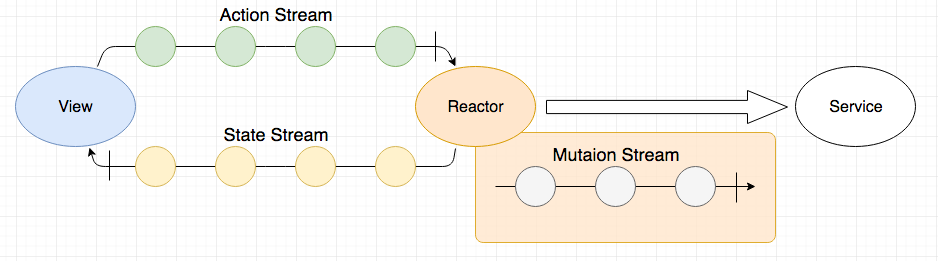

RxJavaを使った単方向データフローアーキテクチャの実践
RxJavaでFluxアーキテクチャ
自己紹介
- 岡本/jumpersons/jumperson
- 株式会社カカクコム
- iOS/Androidエンジニア
この発表のゴール
- “RxJavaを使ったFluxアーキテクチャ”を知ってもらう
- このアーキテクチャが有用なパターンのイメージを持ってもらう
- 今回参考にしたiOSのライブラリReactorKitを知ってもらう
アジェンダ
- Fluxについて
- ReactorKitの紹介
- Androidの実装
- 実装してみた感想
- 今後の課題
Fluxについて

https://facebook.github.io/flux/docs/in-depth-overview.html 18/02/15
jsのFluxについて

https://github.com/facebook/flux 18/02/15
Fluxの所感
- Fluxはシンプルで良さそう
- jsのFluxは登場人物が多い
- FluxのデータフローにRxを使うとコード量が減りそう
- FluxのデータフローにRxを使いたい！
https://github.com/ReactorKit/ReactorKit 18/02/16
ReactorKitの紹介
- Swiftのライブラリ
- Star: 901（07/02/15時点）
- Basic Concept
- ReactorKit is a combination of Flux and Reactive Programming.
- 小さいライブラリ
- Reactorも178行と非常に小さい（07/02/15時点）
- データフローをRxで実装
- Androidのライブラリはない
- Androidのライブラリはない
- ただし、小さなライブラリなので自作できそう
- Fluxの採用を決める
ReactorKitのアーキテクチャ

https://github.com/ReactorKit/ReactorKit 18/02/15
ReactorKitのアーキテクチャ
https://github.com/ReactorKit/ReactorKit 18/02/15
データフローをRxで実装
Androidの実装
abstract class Reactor<in Action, Mutation, State>(state: State) {
private val actionSubject: Subject<Action> = PublishSubject.create()
private val initialState = state
var currentState = initialState
private set
val stateStream: Observable<State>
init {
val mutationsStream = actionSubject.flatMap { mutate(it) }
stateStream = mutationsStream
.scan(initialState) { state, mutation -> reduce(state, mutation) }
.startWith(initialState)
.doOnNext { currentState = it }
}
fun onAction(action: Action) = actionSubject.onNext(action)
abstract fun mutate(action: Action): Observable<Mutation>
abstract fun reduce(state: State, mutation: Mutation): State
}
- 簡単なアプリでアーキテクチャを説明
- 機能
- 初回データ読み込み
- データの更新
Actionの実装
https://github.com/ReactorKit/ReactorKit 18/02/15
Actionの実装
sealed class ItemsAction {
object Load : ItemsAction()
object Reload : ItemsAction()
}
Stateの実装
https://github.com/ReactorKit/ReactorKit 18/02/15
Stateの実装
data class ItemsState(val isLoading: Boolean, val items: List<String>)
Mutationの実装
https://github.com/ReactorKit/ReactorKit 18/02/15
Mutationの実装
sealed class ItemsMutation {
data class SetLoading(val isLoading: Boolean) : ItemsMutation()
data class SetItems(val items: List<String>) : ItemsMutation()
}
Reactorの実装
https://github.com/ReactorKit/ReactorKit 18/02/15
Reactorの実装
class ItemsReactor(state: ItemsState) : Reactor<ItemsAction, ItemsMutation, ItemsState>(state) {
override fun mutate(action: ItemsAction): Observable<ItemsMutation>
override fun reduce(state: ItemsState, mutation: ItemsMutation): ItemsState
}
Reactor#mutateの実装
override fun mutate(action: ItemsAction): Observable<ItemsMutation> {
return when (action) {
is ItemsAction.Load -> Observable.concat(
Observable.just(ItemsMutation.SetLoading(isLoading = true)),
Service.items().flatMap {
Observable.just(
ItemsMutation.SetItems(items = it),
ItemsMutation.SetLoading(isLoading = false)
)
}
)
is ItemsAction.Reload -> Observable.empty() // TODO: 仮実装
}
}
Reactor#reduceの実装
override fun reduce(state: ItemsState, mutation: ItemsMutation): ItemsState {
return when (mutation) {
is ItemsMutation.SetItems -> state.copy(items = mutation.items)
is ItemsMutation.SetLoading -> state.copy(isLoading = mutation.isLoading)
}
}
Viewの実装
https://github.com/ReactorKit/ReactorKit 18/02/15
Viewの実装
class ItemsActivity : AppCompatActivity() {
private val reactor = ItemsReactor(ItemsState(isLoading = false, items = emptyList()))
override fun onCreate(savedInstanceState: Bundle?) {
super.onCreate(savedInstanceState)
reactor.stateStream
.observeOn(AndroidSchedulers.mainThread())
.subscribe({
// UI変更
})
}
}
Viewの実装
class ItemsActivity : AppCompatActivity() {
private val reactor = ItemsReactor(ItemsState(isLoading = false, items = emptyList()))
override fun onResume() {
super.onResume()
reactor.onAction(ItemsAction.Load)
}
}
これでReactorKitのアーキテクチャについて一通り説明
導入時に考慮すべきこと
- Androirdのライフサイクル
- 画面遷移
- 差分更新
- 画面外で発生するAction
- Hot/Cold
現在使っているReactorの実装
abstract class Reactor<Action, Mutation, ViewState, Navigation>(
viewState: ViewState,
actionStream: Observable<Action> = Observable.empty()) {
private val actionSubject: Subject<Action> = PublishSubject.create()
private val initialViewState = viewState
var currentViewState = initialViewState
private set
private val disposables = CompositeDisposable()
val startingWithCurrentViewStateStream get() = viewStateStream.startWith(currentViewState)
val viewStateStream: Observable<ViewState>
val navigationStream: Observable<Navigation>
init {
val mutationsStream = actionSubject.mergeWith(actionStream).flatMap { mutate(it) }.replay().refCount()
viewStateStream = mutationsStream
.scan(initialViewState) { state, mutation -> return@scan mutation.fold(state) { viewState, mutation -> reduce(viewState, mutation) } }
.startWith(initialViewState)
.doOnNext { currentViewState = it }
.publish().also { disposables.add(it.connect()) }
navigationStream = mutationsStream
.flatMap { Observable.fromIterable(it) }
.flatMap { navigate(it) }
.publish().also { disposables.add(it.connect()) }
}
fun onAction(action: Action) = actionSubject.onNext(action)
fun dispose() = disposables.dispose()
abstract fun mutate(action: Action): Observable<List<Mutation>>
abstract fun reduce(viewState: ViewState, mutation: Mutation): ViewState
abstract fun navigate(mutation: Mutation): Observable<Navigation>
}
ここではStateをViewStateという表現に変更しています
実装してみた感想
- 単方向データフローにしてコードの見通しが抜群に良くなった
- どこに何を実装すべきかより明確になった
- 記述量は若干増えた
今後の課題
- 画面共通化問題
- Android Architecture Componentの利用
- RxJavaの活用